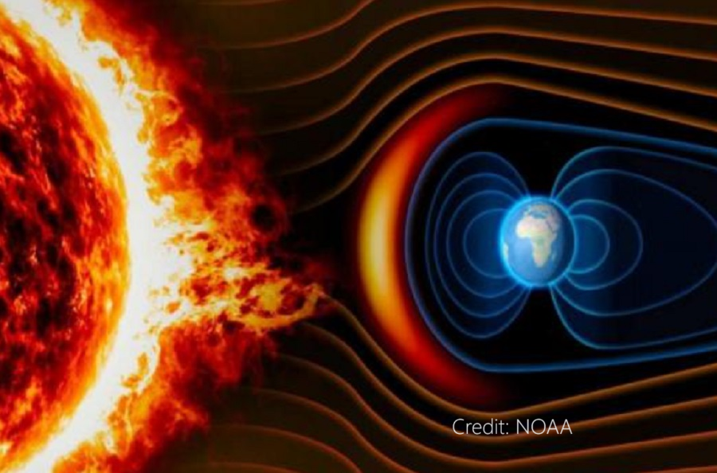
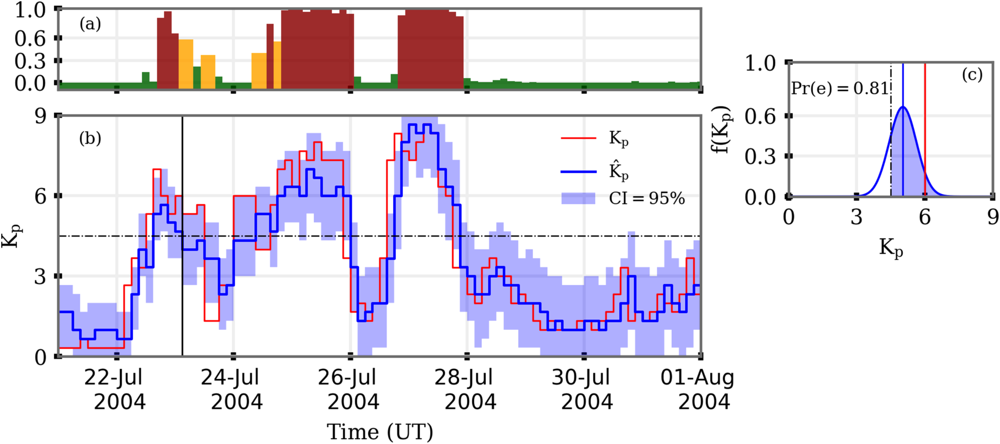

Probabilistic Geomagnetic Storm Prediction
Two-layer neural network architecture for Kp index forecasting with 3-hour lead time and uncertainty quantification
Overview
This study delves into the intricate realm of geomagnetic activity, a critical aspect of space weather forecasting. Traditionally, space weather predictions have heavily relied on summary indices like Kp to assess the likelihood of space weather impacts. While contemporary forecast models for Kp utilize various methods, ranging from empirically-derived functions to physics-based models and neural networks, they often lack the provision of uncertainty estimates associated with the forecast. This work introduces a groundbreaking methodology designed to address this gap, presenting a two-layered architecture to predict Kp with a 3-hour lead time, complete with uncertainty bounds. Moreover, the study distinguishes between storm (Kp ≥ 5⁻) and non-storm cases, enhancing the precision of predictions.

Fig 1. Geomagnetic storm events used in the training/validation dataset. The Kp index (planetary geomagnetic activity index) is shown for 100+ storms, illustrating the diversity of storm intensities and solar cycle dependence.

Fig 2. Proposed model (μ) architecture: Classifier is deterministic in nature, and regressors are probabilistic in nature. The threshold for the classifier is Kp = 5. Here, Wq & Ws are the variable training windows for two regressors.
Two-Layer Architecture
A noteworthy innovation within the study is the incorporation of solar X-ray flux as a key parameter. This addition aims to overcome the limitations of solar wind-driven models in predicting transient-driven activity onset. The research explores whether integrating proxies for solar activity, such as solar X-ray flux, can extend the lead time for predicting geomagnetic storm activity. By adopting this approach, the study not only enhances the predictive accuracy of geomagnetic storm onset but also introduces a probabilistic element to the forecasts — a significant advancement in the field.

Fig 3. Three-hour forecast showing (a) probability of geomagnetic storms, (b) Kp (22nd July–31st July, 2004) and (c) an illustration of the method to extract probability of storm occurrence for one prediction marked by vertical black line in panel (b). Black dashed lines in panels (b) and (c) represent the threshold Kp = 5⁻, red and blue thin lines in panel (c) are observed Kp and predicted mean respectively. The shaded region in panel (c) provides probability of geomagnetic storm (Pr[e] = 0.81).
Results
The comparative analysis of various models within the study demonstrates that leveraging operational information about solar irradiance significantly improves the efficacy of predictive models. This improvement is particularly valuable in capturing the early stages of geomagnetic storms, presenting a more comprehensive and nuanced understanding of space weather dynamics. Ultimately, this research contributes not only to the refinement of space weather forecasting techniques but also paves the way for more informed and probabilistic assessments of geomagnetic storm events, thereby advancing our capabilities to anticipate and mitigate potential impacts on technological infrastructures.